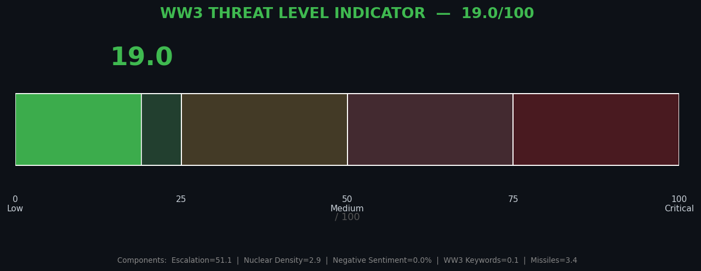
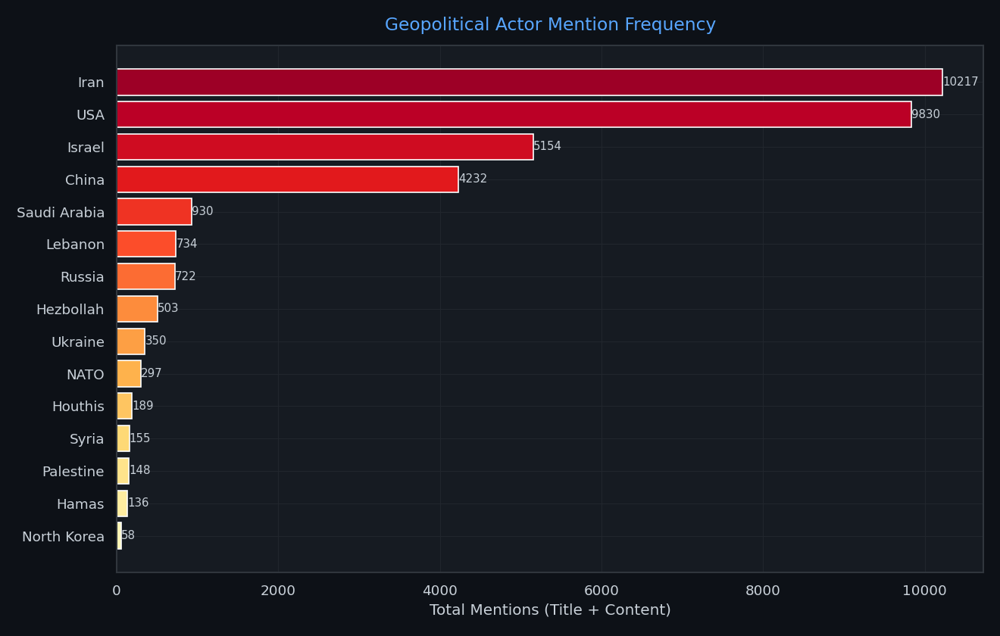
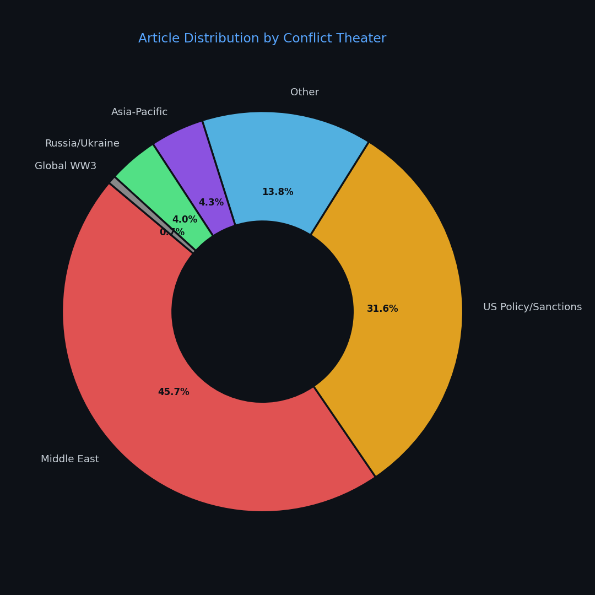
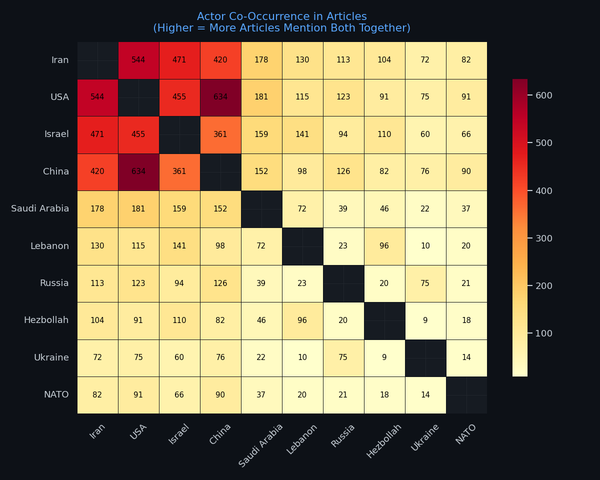
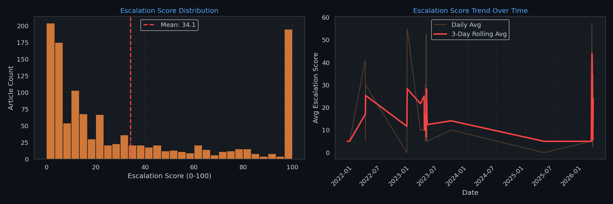
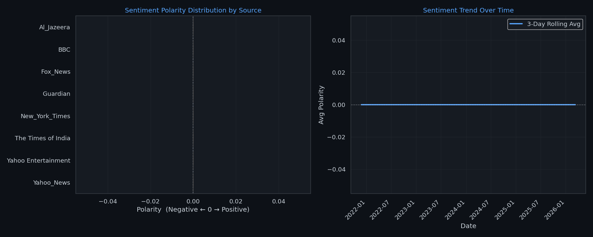
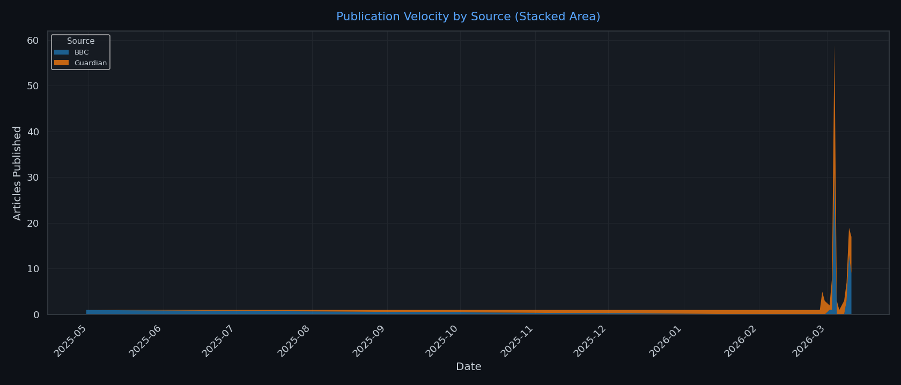
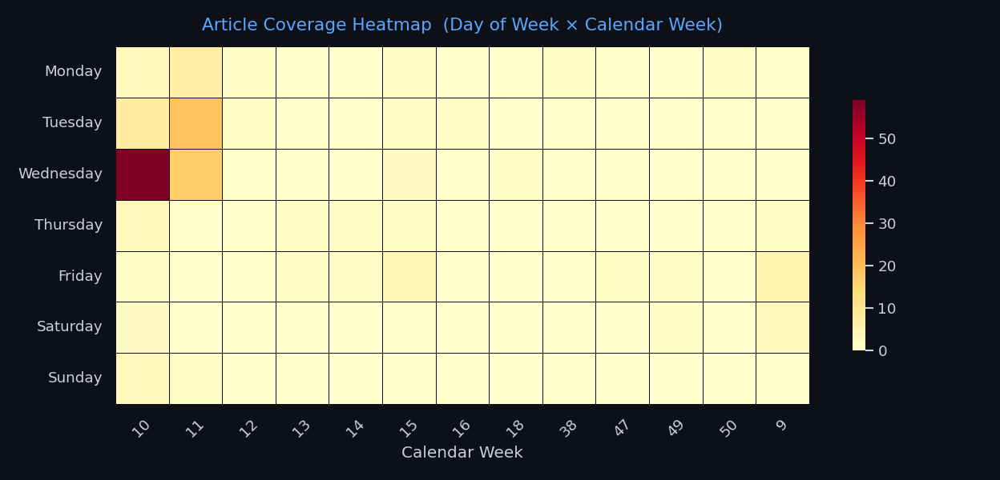
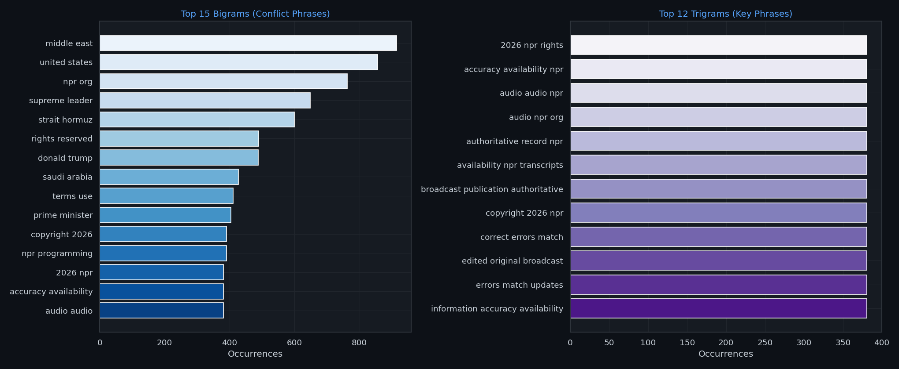

19.0
WW3 THREAT LEVEL — LOW
Composite score from: escalation keywords, nuclear density, negative sentiment, WW3 phrase frequency, missile mentions.
Scale: 0 (no threat) → 100 (critical).
34.1
Avg Escalation Score
+0.000
Avg Sentiment Polarity
Middle East
Dominant Theater
Sentiment Distribution
Positive 0.0%
Neutral 100.0%
Negative 0.0%
Section 1 — Data Overview

[Chart unavailable: threat_level.png]
Top 10 News Sources

[Chart unavailable: top_sources.png]
| Source | Articles |
|---|
| Yahoo_News | 79 |
| Guardian | 72 |
| The Times of India | 67 |
| BBC | 59 |
| Al_Jazeera | 53 |
| Fox_News | 50 |
| New_York_Times | 34 |
| Yahoo Entertainment | 34 |
| CNN | 32 |
| Associated_Press | 30 |
Conflict Keyword Frequencies

[Chart unavailable: top_keywords.png]
Article Word Count Distribution
Mean: 901 words | Median: 524 words

[Chart unavailable: article_length_dist.png]
Publication Timeline

[Chart unavailable: articles_over_time.png]
Section 2 — Geopolitical Actor Intelligence
Actor Mention Frequency

[Chart unavailable: country_actor_mentions.png]
| Actor / Country | Total Mentions |
|---|
| Iran | 10,217 |
| USA | 9,830 |
| Israel | 5,154 |
| China | 4,232 |
| Saudi Arabia | 930 |
| Lebanon | 734 |
| Russia | 722 |
| Hezbollah | 503 |
| Ukraine | 350 |
| NATO | 297 |
| Houthis | 189 |
| Syria | 155 |
Conflict Theater Distribution

[Chart unavailable: conflict_theaters.png]
| Theater | Articles |
|---|
| Middle East | 557 |
| US Policy/Sanctions | 385 |
| Other | 168 |
| Asia-Pacific | 53 |
| Russia/Ukraine | 49 |
| Global WW3 | 8 |
Actor Co-Occurrence Heatmap
Counts how many articles mention two actors simultaneously — reveals key conflict pairs and alliances.

[Chart unavailable: actor_cooccurrence_heatmap.png]
Section 3 — Escalation Scoring & Sentiment Analysis
Escalation Score — Distribution & Trend
Each article receives a weighted keyword score (nuclear=10, missile=5, ceasefire=−3 …).
High scores indicate more intense conflict language. Rolling 3-day average shows trajectory.
Avg score: 34.07 / 100

[Chart unavailable: escalation_trend.png]
Sentiment Analysis — By Source & Over Time
TextBlob polarity: −1 (very negative) → +1 (very positive).
Left: Median polarity per source. Right: Daily rolling sentiment trend.
Overall avg: +0.000

[Chart unavailable: sentiment_analysis.png]
Section 4 — Source Publication Velocity
Stacked Area — Articles per Source per Day
Shows which sources are most active on any given day and how overall volume evolves.

[Chart unavailable: source_velocity.png]
Weekly Coverage Heatmap (Day of Week × Calendar Week)
Reveals editorial cycles — which days see the most conflict reporting and week-by-week intensity shifts.

[Chart unavailable: weekly_heatmap.png]
Section 5 — NLP Phrase Intelligence (N-grams)
Top Bigrams & Trigrams
Most frequent multi-word phrases across all articles after English stopword removal.
Reveals recurring events, weapon systems, and diplomatic terms.

[Chart unavailable: top_ngrams.png]
Section 6 — Semantic Vector Analysis (ChromaDB + Ollama Embeddings)
Articles were chunked and embedded via nomic-embed-text (local Ollama).
Themes are queried by semantic similarity — distance threshold ≤ 1.0.
Thematic Volume — Unique Articles per Theme

[Chart unavailable: vector_themes_volume.png]
Average Semantic Distance per Theme
Lower distance = closer semantic match.

[Chart unavailable: vector_themes_relevance.png]
Semantic Theme Summary
| Theme | Matching Articles | Avg Distance |
|---|
| WW3 / Escalation | 0 | 0.0000 |
| US-Israel | 0 | 0.0000 |
| Israel-Iran | 0 | 0.0000 |
| Iran-US | 0 | 0.0000 |
| Middle East Conflict | 0 | 0.0000 |
| Europe/Russia Context | 0 | 0.0000 |
| Global Economy & Oil | 0 | 0.0000 |